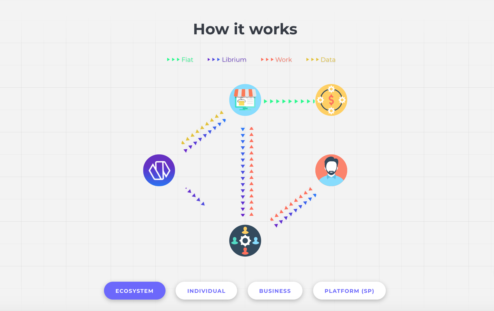

Static view of the Librium animated diagram.
Preview of Librium's launch site.
Position:
Full-Stack Developer @ SparkCo, Inc.
Project Dates:
Jan. - Nov. 2017
Categories:
Web dev, front-end, back-end, start-up
My first co-op search was one that was pretty stressful. I didn't know what to except from the process, and the positions I wanted (front-end primarily) were hard to get since there is only one web class taught in the department. I didn't get an offer until a week into classes in January, which at that point I was already enrolled in spring coureses. However, I didn't give up on my search and finally accepted a position at SparkSales, out of the Harvard Launch Lab. While it wasn't what I had expected, I soon came to realize that it was the best experience I could have asked for at a first co-op.
During my first week on the job I was given the overview of what the start-up was trying to do: create a platform based around chat-based sales as a service, where ecommerce businesses could install a script, and get live agents on their site to boost their conversions. However, this was only a vision at the time. While SparkSales had already shown success for one ecommerce business, there was no platform setup to allow this idea to grow.
This is where I came in - to research the different possible technologies we could work with and later implement them when building the SparkSales platform. The CEO gave me a lot of flexibility with this initial task, trusting in my ability to come up with new insights that he and the lead developer had not already thought of. During this early phase we decided on the initial tech stack to use, as well the best course of action to implement live chat for our clients' sites. I proposed PHP for the backend, since it integrated nicely with the mySQL database already on their server and that I felt confident enough to pick it up as we go.
The core screens of SparkSales' external site.
Once the plans were in place on how to progress and build out SparkSales, I started creating the two initial portals for the platform: the Client and Agent dashboards. The client dashboard was the first one up, since we already had a bootstrapped solution in place that would allow the agents to chat on clients' websites, albeit not as effictivley as we would like. The client dashboard showed analytics of how our sales team was doing - how much money they made and what percentages of visitors convert compared to how many of the chats we manage convert. Later the client dashboard was given a detailed audit of each chat and sale made as well as payment methods via Stripe.
Once the client dashboard was in a good spot, I began work on the agent dashboard. Placing the chat solution into the portal gave us more control over how agents were using it, and allowed us to better integrate with our chat information we gather. I also created a ML tool, the SparkSales Sale-o-meter, which analyzed information from previous chats, both closed and abandonded, to help predict the way the chat would progress. This would allow the agent to determine if they need to incentivize the user through discounts or if the visitor would most likely never convert, giving the agent a better understanding of how to budget their time.
After having the client and agent dashboards set up, we realized we wanted the manager to be able to inspect, audit, and edit the information regarding sales agents without having the need for developers to go in and make the changes themselves. The solution was to create an Admin portal, which have authority over the agent accounts.
A lot of work went into creating the platform from scratch, but once we had all three portions up and running, we knew that our work had paid off. It was around this time were we started onboarding more clients, allowing us to test the limits of our system and how effectivley it could scale. Putting trust in our sales agents and sales manager, we set our sights on further implementing new features rather than continuously trying to watch over the platform.
I was initially only supposed to complete a six-month co-op at SparkCo, however my contributions to the platform had gotten me an extension through the end of the summer. It was around then that the platform was operating independently of the developers, and I was prepearing to transition back into classes for the fall semester. However, I was offered the opportunity to continue working with them part-time during the fall semester, focusing on new projects.
Screens of the three pillars of the SparkSales ecosystem: Client, Agent, and Admin portals
Around the time I was offered to work part-time during the fall semester my boss saw an opportunity to grow the ecosystem of SparkCo. The idea was to start an ICO (initial coin offering) for a distributed system of workers. This entity would be seperate from SparkSales, however would create a space in which SparkSales could become a user of the system.
In order to get this accomplished I turned my attention from the SparkSales platform, which was running smoothly and without need of constant developer supervision, and started researching blockchain and previous ICO's. The initial steps were to create a whitepaper detailing the purpose of the ICO and what it would offer to investors. Once that was completed, I began work on helping to build out a website to distill the key points of the whitepaper. I created an interactive animation of sorts, which aimed at explaining the interactions between the different players in the Librium ecosystem.
Static view of the Librium animated diagram.
Preview of Librium's launch site.
Looking back at my time at SparkCo, it was definitley not the experience I was expecting to have on my first co-op. I was given much more responsibility right off the bat, since it was a new start-up. This allowed me to take the lead on projects and helped me grow my skills in many new programming languages. Buidling a platform from scratch and watching it operate on its own is one of the most exciting feelings a developer can have, and I am grateful for the opportunity I was given with this role.
For any new developers or students looking for a first co-op like I was, I would highly recommend getting the experience of a start-up. There may be a lot more work involved than a similar role at a larger company, however the amount of first-hand experience you gain and the additional problem solving skills you learn along the way with a start-up is invaluable.